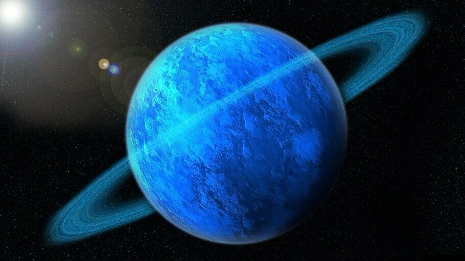

Уран — седьмая планета в Солнечной системе и третий по счету газовый гигант.
Планета является третьей по величине и четвертой по массе, а свое название получила в честь отца римского бога Сатурна.
Именно Уран удостоился чести быть первой планетой, открытой в современной истории.
Однако на самом деле, его первоначальное открытие его как планеты фактически не происходило.
В 1781 году астроном Уильям Гершель при наблюдении звезд в созвездии Близнецов, заметил неких дискообразный объект, который он поначалу записал в разряд комет, о чем и сообщил в Королевское научное сообщество Англии.
Однако позже самого Гершеля озадачил тот факт, что орбита объекта оказалась практически круглой, а не эллиптической, как это бывает у комет.
И только когда это наблюдения было подтверждено другими астрономами, Гершель пришел к выводу, что на самом деле открыл планету, а не комету, и открытие, наконец, получило широкое признание.
После подтверждения данных о том, что обнаруженный объект является планетой, Гершель получил необыкновенную привилегию — дать ей свое название.
Не долго думая, астроном выбрал имя короля Англии Георга III и назвал планету Georgium Sidus, что в переводе означает «Звезда Георга».
Однако название так и не получило научного признания и ученые, в большинстве своем, пришли к выводу, что лучше придерживаться определенной традиции в названии планет Солнечной системы, а именно называть их в честь древнеримских богов.
Так Уран получил свое современное название.
В настоящее время единственной планетарной миссией, которой удалось собрать сведения про Уран, является Voyager 2.
Возврат на главную страницу